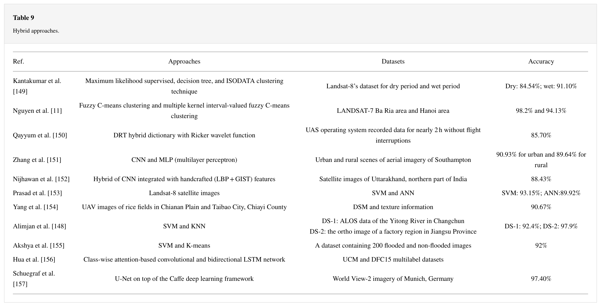

6 Classification I
6.1 Summary

“Image classification is the process of assigning land cover classes to pixels. For example, classes include water, urban, forest, agriculture, and grassland.” - GISGeography (2014)
According to GISGeography (2014), image classification is a fundamental task in remote sensing and is used for various applications, such as land cover mapping, vegetation analysis, and change detection.

“In supervised classification, you select representative samples for each land cover class. The software then uses these “training sites” and applies them to the entire image. The three basic steps for supervised classification are select training areas, generate signature file, and then classify.” (GISGeography 2014)
Supervised classification involves using a set of training samples to train a classification algorithm. The training samples are pixels that are known to belong to specific classes, and the classification algorithm assigns each pixel in the image to the class that it is most likely to belong to based on its spectral signature. Maximum likelihood and support vector machine (SVM) are examples of supervised classification algorithms that are commonly used in remote sensing.

Unsupervised classification, on the other hand, does not require the use of training samples. Instead, the algorithm groups pixels based on their spectral similarity, and the user assigns labels to the resulting clusters. K-means clustering and ISODATA are examples of unsupervised classification algorithms in remote sensing.

“Object-based image analysis (OBIA) segments an image by grouping pixels. It doesn’t create single pixels. Instead, it generates objects with different geometries. If you have the right image, objects can be so meaningful that it does the digitizing for you. For example, the segmentation results below highlight buildings. The 2 most common segmentation algorithms are multi-resolution segmentation in eCognition, and the segment mean shift tool in ArcGIS.”(GISGeography 2014)

Different methods can be used in OBIA to classify the object such as shape, texture, spectral, geographic context, and nearest neighbor.
According to Blaschke (2010), choosing classification method is highly depends on the spatial resolution of your image. Pixel-based classification (supervised and unsupervised classification) performs well on low spatial resolution image, while OBIA is good for high spatial resolution image.
Image classification in remote sensing involves identifying and labeling different land cover and land use types within an image using machine learning algorithms. Classified data can be used for various applications, such as land cover mapping, vegetation analysis, and change detection.
To classify remotely sensed data, there are several machine learning algorithms that can be used. Classification and regression trees (CART), decision trees, and regression trees are examples of decision tree-based algorithms that are commonly used in remote sensing. However, overfitting can be a problem with decision tree-based algorithms, which can be mitigated using techniques such as random forest.
6.2 Applications
A study by Mehmood et al. (2022) entitled: Remote Sensing Image Classification: A Comprehensive Review and Applications, reviewed remote sensing image classification techniques and their applications.
The key takeaways of the study include:
Remote sensing image classification is an essential tool for mapping land cover and land use, identifying features and objects on the Earth’s surface, and monitoring changes over time.
A variety of techniques have been developed for remote sensing image classification, including supervised and unsupervised classification, object-based classification, and deep learning-based classification.
The accuracy of remote sensing image classification is affected by a number of factors, including sensor characteristics, image preprocessing, feature extraction, classification algorithm, and ground truth data.
Applications of remote sensing image classification include environmental monitoring, agriculture, urban planning, disaster management, and defense and security.
The study analyzes various datasets used in remote sensing image classification, including multispectral and hyperspectral imagery, synthetic aperture radar (SAR), and LiDAR data. The methods used in the study involve a systematic review of research articles and a meta-analysis of the results.

The results of the study indicate that deep learning-based classification (e.g. CNN) methods are becoming increasingly popular due to their ability to learn complex patterns in the data. However, traditional classification methods such as maximum likelihood and support vector machines are still widely used and can provide good results when applied appropriately.
What’s interesting is that this study also review the combination of two techniques: pixel-based multilayer perceptron and CNN. The dataset contains images of both urban and rural lands of different land uses of Southampton. It said that the proposed method outperforms the existing deep learning methods. The accuracies achieved from this proposed model are 90.93% for urban and 89.64% for rural lands.

Full review by Mehmood et al. (2022):

6.3 Personal Reflection
Honestly, I am a bit overwhelmed by the lecture material this time because we have to learn some (I mean many) of the new terms in image classification in remote sensing. Also, a bit tricky to understand which classification we can use on our data. However, I enjoy learn something new, and I think the slides and practical cover a wide range of topics and provide detailed explanations of the different techniques and algorithms used. In addition, the resources provided are useful for student to explore!